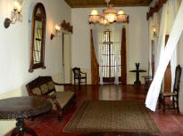
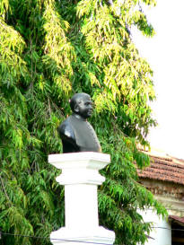
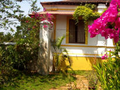

| |
José Paulo was born to Faustino da Costa Pereira de Almeida
and Margarida Ignacia da Encarnação Netto in the City of
Braga in Portugal.
He was part of the entourage of Archibishop Dom Frei Manuel
de Santa Catarina.
He arrived in Goa on the 3rd October 1779, at 19 years of
age. José Paulo spent the remaining 55 years of his life
here in Goa.
He died on the 10th of January 1835 at his residence in the
Chapel of the Mount at Old Goa.
Bestowed with exceptional faculties of intelligence, he
rapidly rose to positions of responsibility.
He began his public carrear in the Archidiocese as
Secretario-Escrivao da Camara Pontificia on 30th Oct 1779
He spent a great amount of his energies dedicated to the
rehabilitation of the two seminaries of Chorao and Rachol.
He is also said to be the founder of Quepem.
The Deão in Quepem
In 1787, Pe. J.P. de Almeida transferred his residence from
Old Goa to Quepem and founded a hamlet. Quepem was, in those
days, covered with forest. He ordered the planting of rice,
coconut palms and other fruit trees.
He established a public market, hospital and other
facilities for the benefit of the inhabitants.
He also founded the St. Cruz Church, at his own cost, as
inscribed on the pyramidal structure in the churchyard.
It is believed that the Deão, began by erecting two columns
at the entrance of Quepem. Thereafter, he obtained
permission that criminal offenders who entered this village
across these columns to work could rehabilitate themselves
in this village which he had founded. Thus, he was able to
establish Quepem as arable, self sustaining and habitable
place.
It is not known the origin of this story, but one is able to
still see the bases of these columns at the entrance of
Quepem.
He constructed in Quepem, for his occasional stay, a
spacious house that he modestly described as a ‘Farm House’.
It was later, justifiably, come to be known as the ‘Palácio
Do Deão’
|


 |